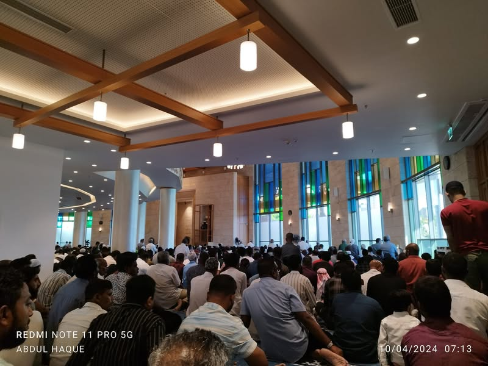
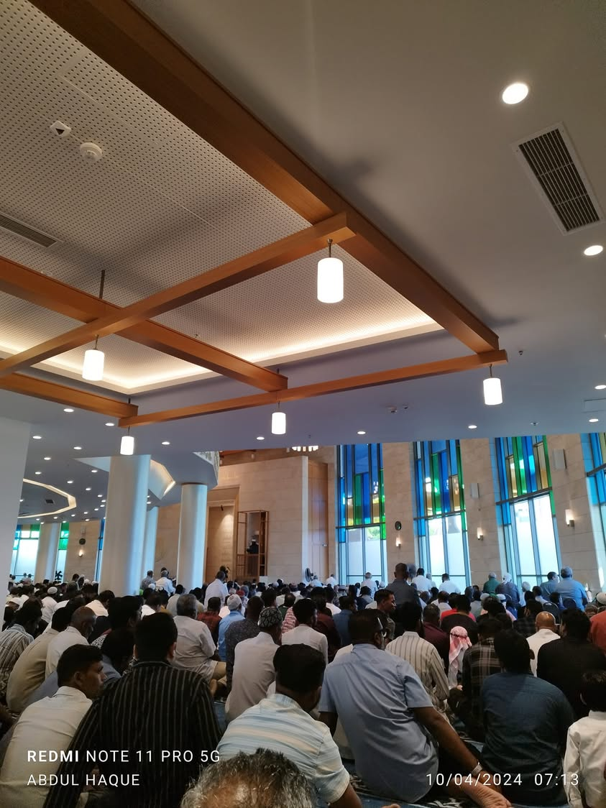
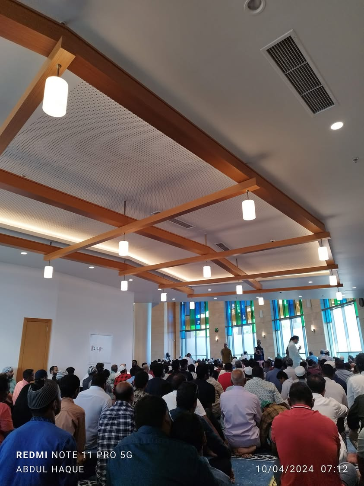

প্রথম রাকাআতে ৫/৬ টা তাকবির দিলেও দ্বিতীয় রাকাআতে কোনো তাকবির দিলেন না ইমাম সাহেব
১০ এপ্রিল, ২০২৪
প্রথম রাকাআতে ৫/৬ টা তাকবির দিলেও দ্বিতীয় রাকাআতে কোনো তাকবির দিলেন না ইমাম সাহেব।
—এটা আবার কোন মাজহাব, মনে মনে ভাবছিলাম। লোকজনও কানাঘুষা শুরু করেছে। সালাম ফেরানোর পর এ'লান হল, ‘দ্বিতীয় রাকাআতে তাকবির ভুলে দেয়া হয় নাই; এতে ঈদের সালাতে কোনো ত্রুটি হবে না। কেননা অতিরিক্ত তাকবির দেয়া সুন্নাহ।’ (অবশ্য, হানাফি মাজহাবে ওয়াজিব।)
ঈদ মোবারক। তাক্বাব্বালাল্লাহু মিন্না ওয়া মিনকুম।
মালে, মালদ্বীপ।


